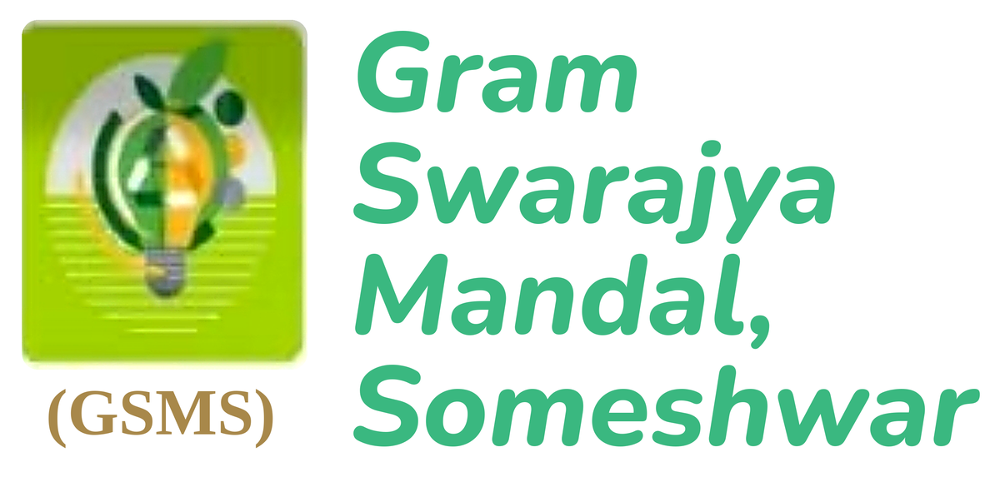

ग्राम स्वराज्य मंडल
सोमेश्वर
हमारी वेबसाइट निर्माणाधीन हैOur website is under development
हम जल्द ही यहां अपने कार्य और गतिविधियों की जानकारी साझा करेंगे। कृपया कुछ समय बाद फिर पधारें।
We will share our work here soon. Please visit again.